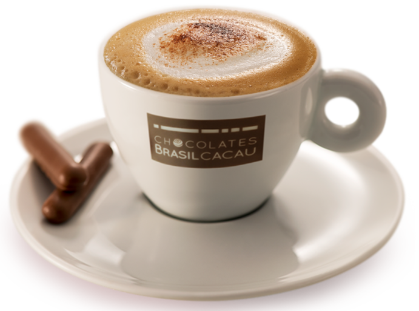
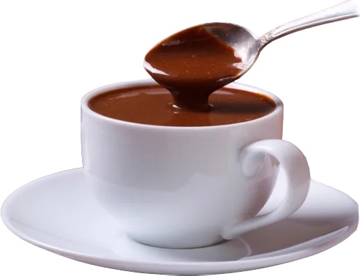
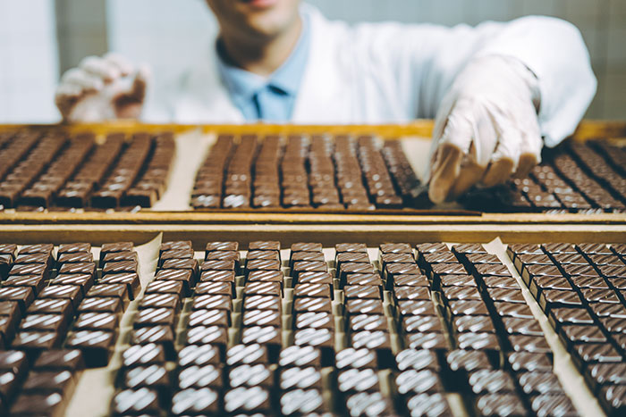
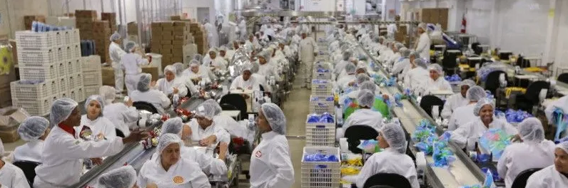

História do chocolate
Os benefício do chocolate
O chocolate representa uma importante fonte de energia, pois é rico em carboidratos e gorduras. O alimento também é rico em vitaminas do complexo B e minerais, tais como o magnésio, que favorece o controle da pressão arterial. Além do bem-estar, o chocolate representa uma importante fonte de energia, pois é rico em carboidratos e gorduras. O alimento também é rico em vitaminas do complexo B e minerais, tais como o magnésio, que favorece o controle da pressão arterial. Com a chegada da Páscoa, é difícil pensar em outra coisa que não seja o chocolate, alimento típico da data. Mas você sabia que esse doce pode ser um grande aliado da sua saúde? Ao longo dos anos, várias pesquisas comprovam os benefícios do chocolate amargo. Ingerido na quantidade certa, além de promover bem-estar, ele é capaz de reduzir o risco de diversas doenças crônicas, incluindo as doenças cardíacas, derrame, câncer e diabetes.
Para ser considerado amargo, o chocolate precisa ter pelo menos 50% de cacau em sua composição. Quanto maior a concentração de cacau, menor o teor de açúcar e maiores são os benefícios à saúde. O chocolate amargo é uma fonte de magnésio, cobre, ferro e manganês. Além disso, também estão presentes em sua composição o potássio, zinco e selênio, minerais com propriedades antioxidantes, que ajudam a acelerar o metabolismo e diminuir a resistência à insulina.

Os Nutrientes do chocolate
Os principais nutrientes existentes no grão de cacau são as gorduras, carboidratos, proteínas, fibras e minerais. E quanto maior for o teor de cacau do chocolate, mais nutritivo ele é. O chocolate amargo também contém estimulantes como a cafeína e a teobromina. Processo de fabricação Vamos dividir o processo de fabricação em 2: a etapa onde o cacau é processado, originando a manteiga de cacau e o chamado licor (massa de cacau), e a etapa onde ocorre a produção do chocolate efetivamente
Preparo e Processamento do Cacau
Primeiramente, ocorre a etapa de colheita dos frutos maduros, assim as sementes, também chamadas de amêndoas do cacau, são coletadas. Após, estes grãos são fermentados – onde começam a formação de alguns compostos que conferem ao chocolate algumas de suas características. Em seguida as amêndoas passam por uma secagem à luz do sol ou com circulação de ar quente.
Chocolate e a industria
Assim que os grãos forem secos, eles serão encaminhados para a indústria:
Após serem selecionadas e limpas para eliminar impurezas, as sementes do cacau são torradas e em seguida descascadas. Ao fim desta etapa, elas estão limpas e passam a ser chamados de NIBs de cacau. Os NIBs são então moídos até obter-se o licor de cacau, uma massa fina de partículas, também conhecida como pasta. Depois, o licor é prensado para a extração da manteiga de cacau, ficando uma massa sólida que é posteriormente pulverizada. Esse produto formado é o famoso cacau em pó!
Enfim, a manteiga de cacau e o cacau em pó seguem para a produção do chocolate.
Produção do Chocolate
O processo de fabricação do chocolate em si passa por alguns processos básicos os quais estão esquematizados a seguir:
Inicialmente, ocorre a mistura dos ingredientes (açúcar, cacau em pó, manteiga de cacau etc.) para que estes formem uma massa uniforme e homogênea. Nesta etapa, os ingredientes são colocados em um equipamento misturador aquecido a temperaturas superiores ao ponto de fusão da manteiga de cacau (assim ela permanece no estado líquido durante a mistura).
Assim que atingir a textura e consistência adequada, a massa passa para a etapa de refino, onde os cristais de cacau de açúcar são reduzidos até que seus tamanhos os tornem imperceptíveis na boca quando o chocolate for ingerido.
Em seguida esta pasta homogênea chega na fase de conchagem, onde é adicionada mais manteiga de cacau e a massa é continuamente trabalhada, agitada e remexida a temperaturas entre 60 e 80 ºC. Nesta etapa, devido às altas temperaturas, ocorre a evaporação de parte da água presente na massa e a transformação da mesma em um líquido espesso e cremoso, desenvolvendo também as características sensoriais do chocolate que conhecemos.
Logo após, esta emulsão passa pelo famoso processo de temperagem, onde é submetida a etapas de aquecimento e resfriamento, induzindo à formação controlada de cristais na manteiga de cacau. Nesta etapa, o chocolate adquire suas características de dureza e quebra.
Enfim o chocolate é moldado no formato desejado e resfriado até que se tornem sólidos e trabalhado ou destinado conforme o seu desejado fim.
Vale ressaltar, novamente, que este é o processo genérico de produção do chocolate, o qual pode variar de empresa a empresa, tipo de produto, adição de especiarias, saborização etc.